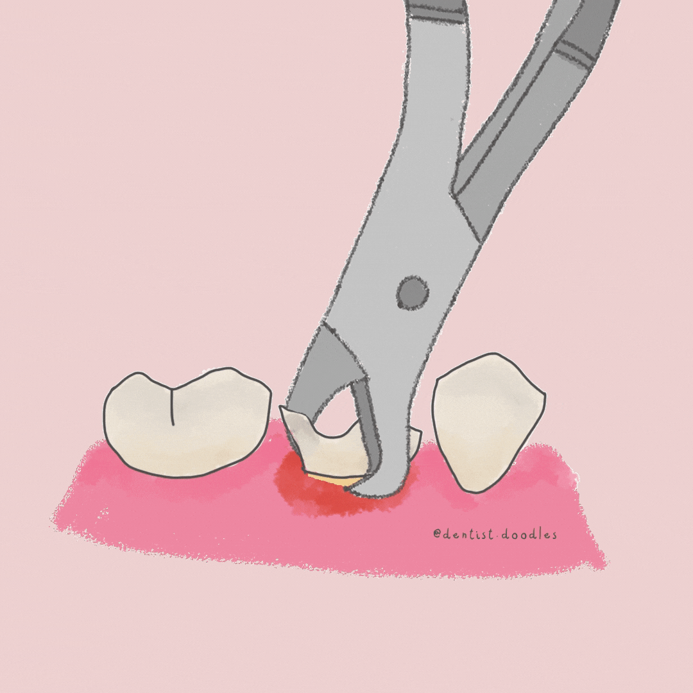

La extracción dental es el procedimiento que realiza el odontólogo para extraer un diente
de la encía. Este procedimiento se lleva a cabo cuando un diente no se puede recuperar,
teniendo en cuenta la situación la cavidad bucal de cada persona.
¿Que debemos hacer antes de una extracción?
- Evitar las bebidas alcohólicas dos días antes de la extracción.
- Evita comidas pesadas la noche previa y trata de dormir para amanecer descansado/a.
- En caso de requerir sedación consciente, debe venir acompañado y no podrá conducir, horas después de la cirugía.
- Si está tomando algún medicamento, debe informar a su odontólogo.

Nuestros tratamientos están diseñados para cubrir las necesidades específicas de cada paciente.